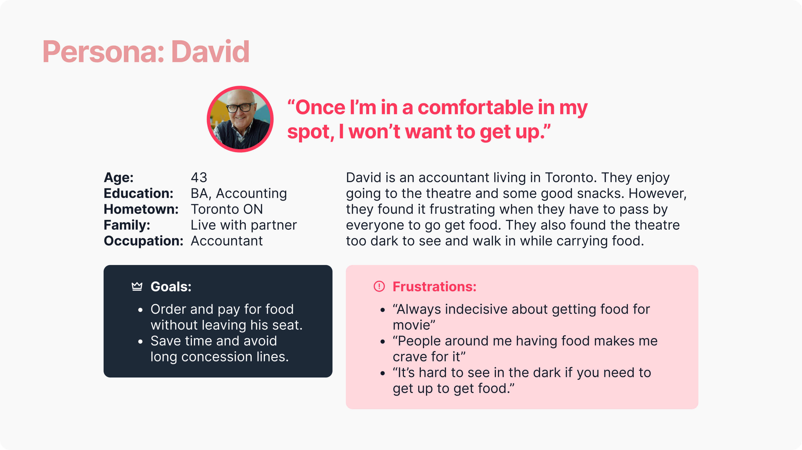
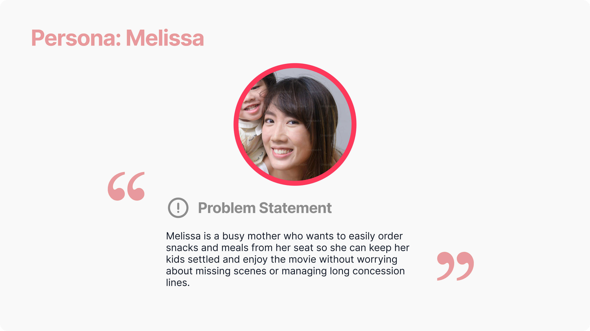
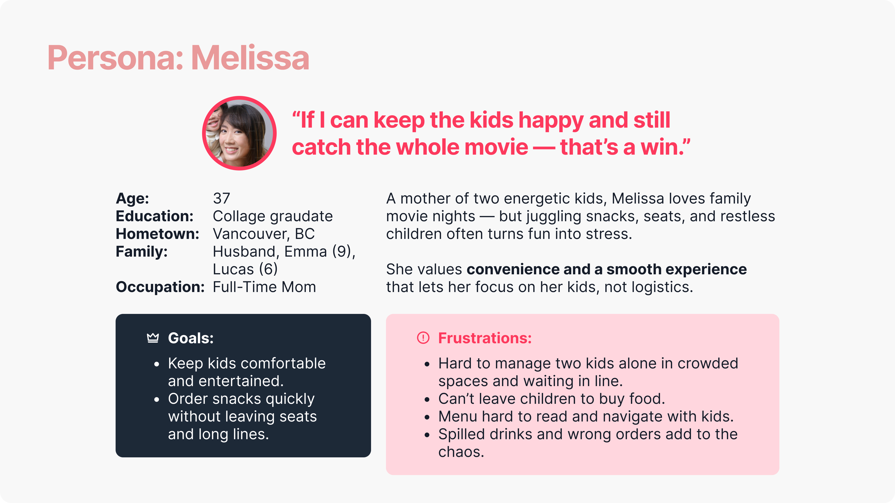
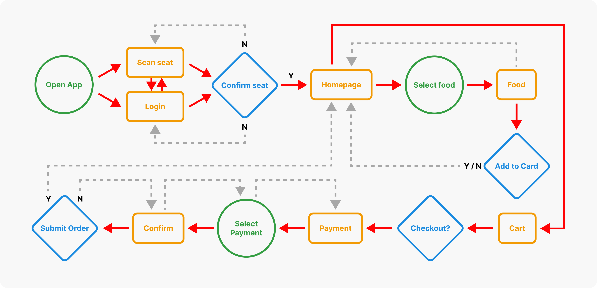
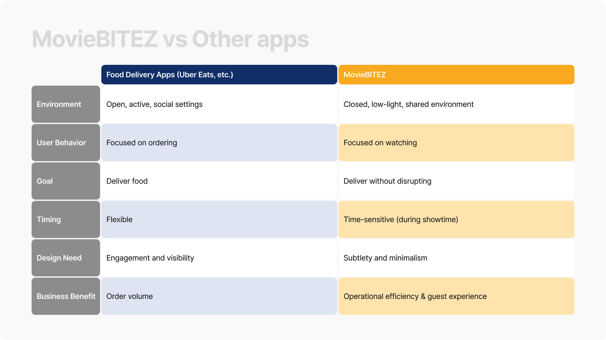
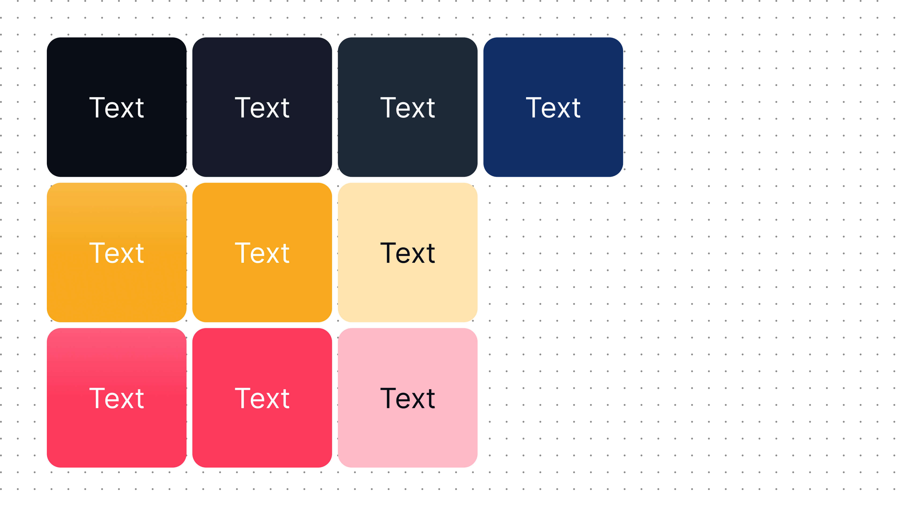
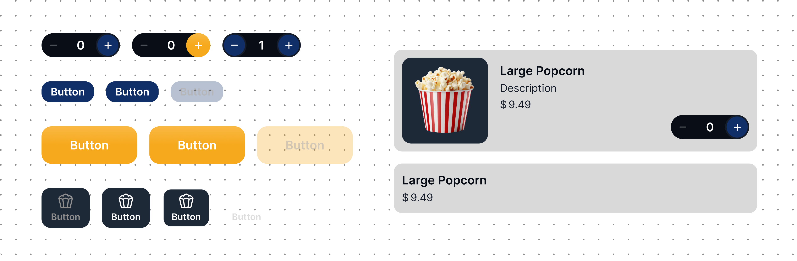

Reimagining the Theatre Dining Experience
MovieBitez is a concept project developed as part of my Google UX Design certification course, where I worked through the full process — from user research and UX design to final UI and prototyping.
As a product, MovieBitez is a mobile app that lets moviegoers order food and drinks directly to their seats.
No more lines. No awkward mid-movie exits.
Just comfort, convenience, and popcorn on demand.
Background Story
Before I began, I had a scenario from my own experience.
I’ve settled comfortably into my recliner, excited for the movie. The lights dim, the trailers roll — and suddenly, the smell of buttery popcorn hits me. Then comes the crunch of chips from behind me.
Instant regret.
I didn’t get snacks — and now I’m stuck in the middle of the row, torn between squeezing past everyone or trying to get over it.
That’s when I thought:
“In daily life, we have apps like Uber Eats and SkipTheDishes that make getting food as simple as a tap on our phones. So why not bring that same convenience to the movie theatre?”
Responsibilities
- UX Research
- User Interviews
- Concept Development
- Data Analysis
- Branding & UI Design
Tools
Figma
Procreate
Challenge: Convenience Shouldn’t Be Complicated
After chatting with a few friends and reading online research from forums, I discovered that while VIP theatres promise comfort, the in-seat dining experience was still old-fashioned and disruptive.
Key pain points
- Guest Discomfort - Ordering food became awkward for seated guests, especially those in the middle of rows or with limited mobility. This discouraged spontaneous purchases and lowered overall concession sales, showing a clear need for a more seamless, in-seat solution.
- User Strain - Guests navigated tight aisles in dim lighting while carrying food and drinks — stressful and inconvenient.
- Skip the Line (or Lack Thereof) - Unlike other entertainment or dining experiences, there was no convenient way to order ahead or skip the concession line. This led to long queues before showtimes — often causing guests to miss previews or delay purchases altogether.
Personas
Based on research, I created two personas representing typical moviegoers — from busy professionals to parents with children.




Goal Statement
The MovieBitez food ordering app will let users order food in-theatre quickly and easily.
This benefits tired workers and parents by allowing them to stay seated, save time, and enjoy the movie while their food is handled.
Effectiveness will be measured by the number of food orders placed during testing.
Storyboard
I created a storyboard that visualize the emotional journey of users — from deciding to order food to receiving it at their seats.
1. David went to the movie theatre and sitting with poeple who got food. The smell got to him and he is now craving for some snacks as well.
2. However, he felt awkward to get out of his seats.
3. He didn't want to bother other people and worried about tripping and following in the dark.
4. David found MovieBitez and decided to give it a try. He placed an order and confirmed.
5. Food got delivered to David's seat.
6. David is glad that he didn't have to leave his seat.
User Flow
I mapped the journey from confirming seats → placing an order → checkout to ensure a smooth, linear flow.

Wireframes
I first sketched rough wireframes to validate early ideas and gather feedback quickly.
With this prototype, I conducted UX research with five participants who regularly go to the movies and refined the flow based on their feedback.


User Studies
The user interviews took place online. Each participant interacted with the wireframe to place an order.
I evaluated usability based on task completion time, user errors, and expectations.
Testing Prompts
I created 6 prompts to test the prototype:
- Prompt 1: Browse through the app and try to look for "popcorn".How easy or difficult was it to navigate through the different categories of food? Is there anything you would change about the categorization or the navigation?
- Prompt 2: Try to order an item and add extra toppings to it.How easy or difficult was this task to complete? Is there anything you would change about the process of adding items to cart?
- Prompt 3: Try to edit item quantity.How easy or difficult was editing the cart? Is there anything you would change?
- Prompt 4: Try setup for delivery/pickup.How easy or difficult was it to set up for delivery or pickup? Is there anything you would change?
- Prompt 5: Select the credit card payment methodHow easy or difficult was this task to complete?
- Prompt 6: Finally try to checkout and complete the orderHow easy or difficult was this task to complete?
Revised Wireframe & Key Features
Based on insights, I enhanced the design to include:
- Seat Confirmation Options Scan the QR code on the seat, scan movie tickets, or log in with the theatre’s app.
- Faster Editing & Ordering Edit quantity directly from cart or item page.
- Streamlined Menus Reduced text for quicker scanning and better visual hierarchy.
- More Payment Options Include credit cards, gift cards, and digital wallets.
- Confirmation Step Added a final “Confirm Order” page to reduce accidental submissions.


💡 Insight: Bringing Convenience to a Shared, Silent Experience
We already have Uber Eats, SkipTheDishes, and DoorDash for everyday food delivery — designed for users who are actively engaging with their devices in open, social environments.
But a movie theatre is completely different.
It’s a closed, quiet space where every sound, every light, and every distraction matters.
Guests want convenience without interruption.
Staff want efficiency without friction.
“Unlike food delivery apps, MovieBitez isn’t about more food — it’s about better flow.”

Branding & Design System
The name MovieBitez merges the worlds of theatre and indulgence, reflecting both function and delight.
Colors
I designed the app using a dark theme to accommodate the low-light environment of a theatre. This approach helps reduce eye strain and minimizes screen brightness, allowing users to browse and order without disrupting others around them.
The color palette combines deep navy blues — echoing the glow of a theatre screen — with a warm gold accent that evokes a sense of leisure, comfort, and subtle luxury. Together, they create a balanced visual experience that feels both immersive and elegant, perfectly suited for a cinematic atmosphere.
Typography:
To maintain visual clarity and consistency, I limited the typography to five variations across the entire app. The type hierarchy was designed to balance readability and hierarchy in a dark environment:
- Large, bold headers guide users quickly through key sections like Menu, Combos, and My Orders.
- Medium-weight subheaders distinguish food categories and pricing for effortless scanning.
- Body text remains legible at smaller sizes, using high contrast for accessibility.
- Buttons and labels use concise, sentence-style text for clarity and ease of interaction.
Components
I created a set of reusable components that could easily adapt across the app.
I also defined key interaction states — Enabled, Hover, Pressed, and Disabled — to provide clear visual feedback and improve the overall user experience.
I also included a range of cards and modal variations to support different functions within the app, featuring item images, names, and prices for quick recognition.
These standardized elements not only improved design consistency but also made development and future updates more scalable.
High Fidelity Wireframe


Lessons Learned
MovieBitez showed me that innovation isn’t always about invention — sometimes it’s about adapting convenience to context.
It’s not “Uber Eats for theatres.”
It’s about designing a seamless, silent experience that enhances comfort and keeps users immersed in the moment.
Because sometimes, the best UX is the one that lets you stay fully in the moment — popcorn smell and all. 🍿